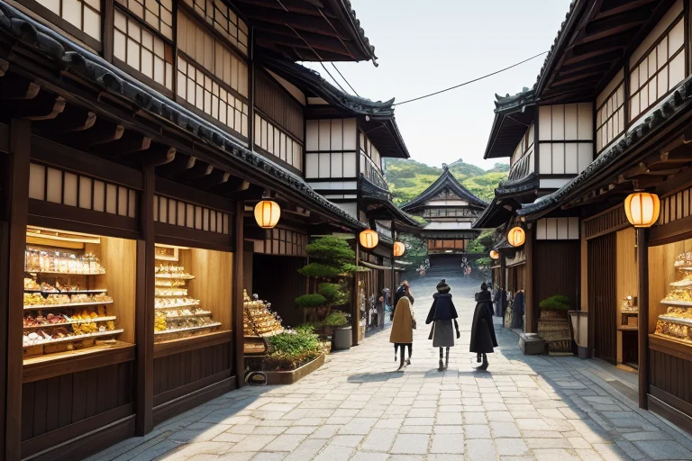
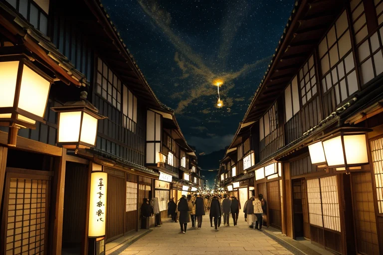

第一章 現実の石川
あなたはまだ気づいていない。この土地にも、王がいることを。
ひがし茶屋街の石畳は、午後の人通りで磨かれ、仄かに光る。観光客の笑い声、ガラス戸を滑る音、金箔ソフトを求める列。その喧噪の底で、金の流れと人の欲望が、目に見えない歪みを生み出していた。店先に並ぶ加賀友禅の振袖は、一枚一枚が職人の時間の結晶だが、その値札を見てため息をつく者も多い。美は商われるものとなり、守るべきものは、時に創ることを阻む重石にもなる。
金沢城の石垣の陰で、一人の男が立っていた。黒いコートに身を包み、その目は茶屋街の賑わいを、一点の塵も逃さぬ職人の目で見つめている。彼こそがイシカリア・アルテ、この地に遣わされた美の王である。彼の傍らでは、光の粒子のようにきらめく小さな存在、妖精アルティナが、往来する人々の会話から「本物らしさ」への希求をかき集めていた。もう一体、金箔の粉を纏ったような妖精カナザリアは、店先の金箔細工の輝きを微かに振動させ、その美意識の純度を保とうとしている。
歪みはここにある。伝統を守ろうとする完璧主義の重圧が、新たな創造の息吹を狭め、金の流れが美そのものを歪めようとする。王は無言で、その均衡を計る。
第二章「歪みの兆候」
ひがし茶屋街の路地裏、伝統的な木造建築の奥で、若い蒔絵師がため息をついた。注文は「観光客向け、早く安く」ばかり。輪島塗の技法で十二の工程を踏むべきところを、三つで済ませるよう求められる。彼の手元には、金粉の代わりに化学塗料が置かれていた。カナザリアが纏う金箔の光が、一瞬、濁ったように揺らぐ。金の流れが、美のプロセスを侵食し始めていた。
21世紀美術館では、現代アートの展覧会が賑わう。しかし、ある批評家のブログは「金沢は伝統のディズニーランド化している」と書き立てた。守るべき様式と、創るべき表現。その狭間で、職人たちの間に目に見えない亀裂が走る。アルティナは、老舗の主人が「昔はもっと…」と呟く声を、切ない記憶として保管した。
王は金沢城の石垣に佇み、その「歪み」を感じ取る。経済合理性という名の圧力が、千年の時間をかけて育まれた「美の密度」を希薄にしようとしている。彼は指を微かに動かした。明日、迷う蒔絵師の前に、本物の金粉を使った古い下絵が、偶然の棚卸しで見つかるように。消せない流れを、ほんの少しだけ迂回させるために。

第三章 王の葛藤
ひがし茶屋街の夜、格子戸から漏れる三味線の音と笑い声が、金箔を貼ったような空気を震わせる。その賑わいの底で、イシカリア・アルテは矛盾を感じていた。観光客が押し寄せ、金が流れ、伝統が「コンテンツ」として消費されていく。これもまた、この土地の活気であり、生き残るための術だ。彼の役目は歪みを調整することであって、人の営みそのものを否定することではない。
「守るべきは形か、それとも魂か」
金沢城の石垣に手を触れながら、彼は自問した。職人が手間を惜しみ、機械的な均一さを選ぶ時、そこには確かに「美の密度」という歪みが生じる。彼はそれを感知し、微調整を加える。古い技法書が偶然に開かれるように、本物の素材に触れる機会が巡ってくるように。しかし、その行為自体が、新たな創造の芽を摘んでいないか。守ることに執心するあまり、美が進化する道筋を塞いでいるのではないか。
彼は輪島の漆器工房を想った。海から吹く塩風が窓を叩く、あの工房で。
第四章 妖精との対話
輪島の工房で、イシカリアはカナザリアの光を見つめた。金箔を扱う妖精は、漆の椀に施された微細な金の粒子を、そっと整えていた。
「王よ、あなたは『守る』ことに囚われていませんか」
カナザリアの声は、金箔を扱う刷毛の音のように微かだった。
「この町の美は、守るために生まれたのではありません。商うために、生きるために生まれたのです」
彼女は続けた。
「加賀百万石の文化は、守るためだけのものではなかった。藩の財を、権威を、生き延びるための知恵を、『美』という形に変換して商った。ひがし茶屋街の遊びも、金沢城の石垣も、全ては流動する金と人の欲望が、偶然に美しい形を結んだもの。守るべき完成形など、最初からなかったのです」
イシカリアは、工房の窓から能登の海を見た。荒々しいその海が、時には穏やかな鏡となり、全てを映し出すように。
「では、我々の調整は」
「歪みを整えるのは、流れを止めるためではなく」カナザリアの光が、漆の深い黒に吸い込まれそうになりながら輝いた。「その流れが、自ら美しい形を『創り出す』ための、ほんの少しの余地を与えるためです。職人が手を止め、一呼吸置くその瞬間を、私たちは守っているのかもしれません」
第五章 微調整と余韻
ひがし茶屋街の石畳を、観光客の足音が軽やかに響かせる。イシカリアは格子戸の陰に立ち、その流れを見つめていた。彼女の目には、人々の動きが金箔の粉のように煌めき、交差し、時にぶつかりそうになる軌跡が映る。ほんの少し、肩が触れ合いそうな二人の歩幅を変え、道に迷いかけた子供の視線を、偶然母親の手へと導く。それは、職人が漆の表面に金粉を蒔く時、息を潜めて微かに手首を震わせるような調整だ。
21世紀美術館のプール。水の底から見上げる人々の笑顔が、ゆらりと揺れる。その瞬間、イシカリアは指先をかすかに動かした。プールサイドで滑りかけた少年の足元の水気を、一瞬だけ早く蒸発させる。少年はよろめくことなく、友達の元へ走っていった。誰も気づかない。守るのでも、創るのでもない。ただ、その瞬間が「あるがまま」でいられるための、ほんのわずかな隙間を用意する。
金沢城の石垣に夕日が沈む時、アルティナが囁いた。「今日も、多くの『偶然』が美しい形を保ちました」。イシカリアは頷き、自らの掌を見た。そこには感情らしき温もりが、かすかに宿っていた。歪みを整えることは、流れを止めることではない。流れが自ら美しい形を創り出すための、ほんの少しの余地を与えること。彼女は今、それを知った。
あなたの町にも、王がいる。